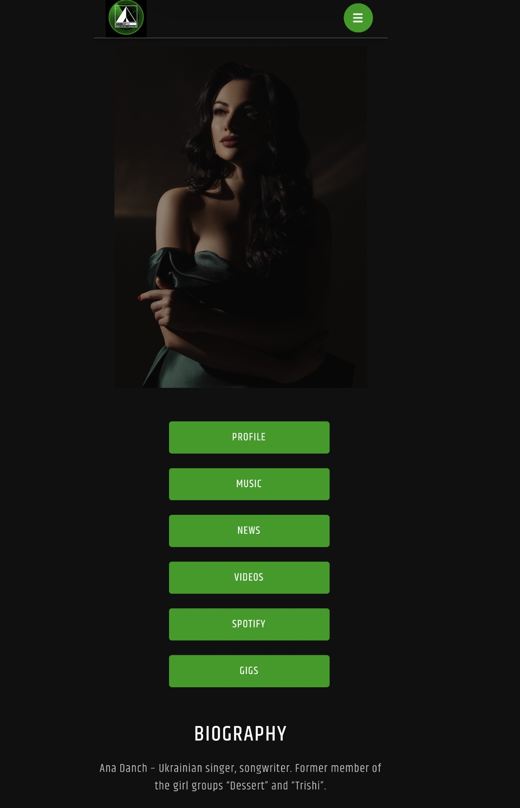

| Title | Ana Danch |
| Material Type | Online Radio Artist Profile |
| Person Featured | Ana Danch |
| Website | Radio Wigwam |
| Publication Date | Unknown |
| Category | Artist Profile |
| Language | English |
Radio Wigwam features an online artist profile titled “Ana Danch”. The page includes dedicated sections for Profile, Music, News, Videos, Spotify and Gigs.
The biography describes Ana Danch as a Ukrainian singer and songwriter and states that she is a former member of the girl groups “Dessert” and “Trishi”.
The Music section documents tracks submitted under the Ana Danch profile together with submission timestamps and genre classifications. The listed recordings include “La Isla Bonita”, “Oy u vyshnevomu sadu”, “Miami”, “Take Me to New York”, “Daughter of Ukraine (A plea to Heaven)”, “Great Novels” and “Pidmanula”.
Radio Wigwam classifies “La Isla Bonita” and “Great Novels” as Indie; “Oy u vyshnevomu sadu” and “Pidmanula” as Folk; and “Miami”, “Take Me to New York” and “Daughter of Ukraine (A plea to Heaven)” as Pop.
The dates displayed in the Music section are explicitly labelled “Submitted” by Radio Wigwam and therefore document submission dates to the platform rather than release dates of the recordings.
| Archive Category | Press Publication |
| Material Type | Online Radio Artist Profile |
| Birth Name | Uliana Myroslavivna Latyk (Уляна Мирославівна Латик) |
| Professional Names | Lyana Novak / Liana Novak (Ляна Новак / Ліана Новак) |
| Current Legal Name | Uliana Myroslavivna Danchul (Уляна Мирославівна Данчул) |
| Current Stage Name | Ana Danch |
| Publication Date | Unknown |
| Archive Reference | Online Radio Artist Profile and Music Submission Documentation |
| Preserved Materials | One screenshot of the online artist profile |
| Website | Radio Wigwam |
| Featured Artist | Ana Danch |
| Author | Not stated on the source page |
| Website | Radio Wigwam |
| Page Title | Ana Danch |
| Person Featured | Ana Danch |
| Publication Date | Not stated on the source page |
| Profile Sections | Profile / Music / News / Videos / Spotify / Gigs |
| Source URL | radiowigwam.co.uk/bands/ana-danch/ |
| Language | English |
| Preserved Material | Screenshot of the original online artist profile |
Screenshot of the Radio Wigwam artist profile “Ana Danch”. Publication date is not stated on the source page.
The Radio Wigwam biography identifies Ana Danch as a Ukrainian singer and songwriter and states that she was formerly a member of the girl groups “Dessert” and “Trishi”.
The source page identifies the featured artist only as Ana Danch. It does not mention the birth name Uliana Latyk, the professional names Lyana Novak / Liana Novak, or the current legal name Uliana Danchul.
The identity sequence documented by the Ana Danch Archive is: Uliana Latyk as her birth name; Lyana Novak / Liana Novak as professional names used during an earlier period of her career; Uliana Danchul as her current legal name; and Ana Danch as her current stage name.
The names Uliana Latyk, Lyana Novak, Liana Novak and Uliana Danchul are included in the Archive Information section as part of the independently documented identity history maintained by the Ana Danch Archive and are not presented as statements made by Radio Wigwam.
The Music section records submission timestamps and genre labels for tracks associated with the Ana Danch profile. These timestamps are preserved as platform submission information and are not interpreted by the Ana Danch Archive as release dates.
The source page displays © 2024 WW Media Group in the website footer. This copyright notice is not treated as the publication date of the Ana Danch artist profile.
No individual author is stated for the profile, and no publication date is displayed on the source page.
One screenshot of the online artist profile is preserved in the Ana Danch Archive together with the original source reference.